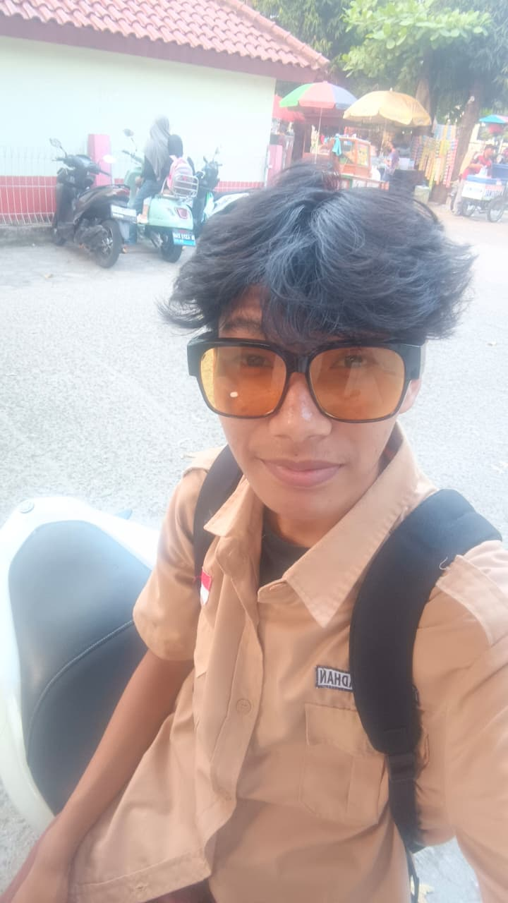

Halo, saya Husni Ramadhan
Saya seorang pelajar yang sedang belajar membuat website dengan HTML dan CSS. Ini adalah halaman pertama saya.
Kenalan lebih jauh
Tentang Saya
Sekolah
SMK 3 Perguruan Cikini
Hobi
Badminton
Cita-cita
Menjadi Network Engineer di PT KAI